ClickGUI and Settings
Press Right Shift for a frosted-glass menu: category tabs across the top and icon cards in a three-column grid, search with Ctrl+F, and a Settings window for the HUD, interface, themes and saved setups.
A frosted-glass HUD, sixteen themes, waypoints, trackers and a tuned mod pack. Made by friends, for playing with friends. Set up in one click.
Needs Minecraft: Java Edition. The .mrpack works in the Modrinth App and Prism Launcher on any OS.
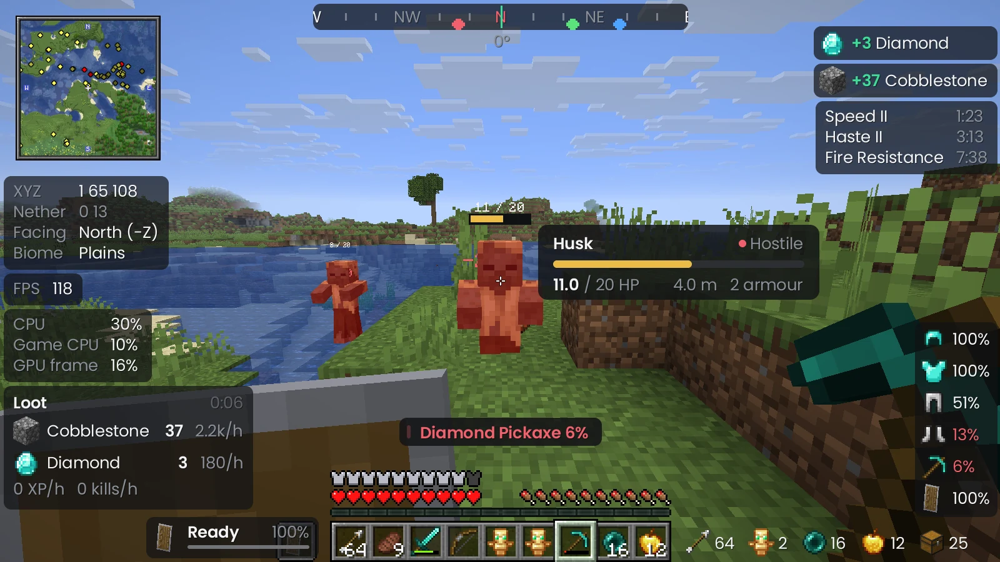
Every panel sits on a live blur of the world behind it, with tinted glass, soft shadows and crisp type. It scales with your screen, so it looks the same at any resolution or GUI scale.
Built for servers with friends: the info you actually look at, laid out cleanly, and nothing that gets in the way.
Press Right Shift for a frosted-glass menu: category tabs across the top and icon cards in a three-column grid, search with Ctrl+F, and a Settings window for the HUD, interface, themes and saved setups.
Drag any panel and it lands exactly where you drop it, snapping to edges and other panels. Select one and every setting it has sits right beside it.
Xaero's minimap lives in your HUD. Save spots with /wp, follow them on the compass and get a death waypoint automatically.
Red where mobs can spawn now, amber where they can at night, plus chunk borders and spawn range rings for planning farms.
Press J for a diary of each world: deaths and what killed you, bosses, rare finds, advancements and trips, with screenshots.
Everything you pick up, with drops, XP and kills per hour. Reset it when you start a farm run.
A target card with health, armour and distance for what you're looking at, plus health bars and damage numbers over hurt mobs.
Warnings for low health, hunger, drowning and breaking gear, and a checklist before the Wither, the Warden or a raid.
Hold C to zoom and Left Alt to look around. Build your own crosshair: five styles, any size and colour.
Local tools for packing, finding supplies and understanding your sessions.
Link a saved setup in Configs. It loads on your next join, and your previous settings return when you leave.
Search items in containers you previously opened, then copy a location or make a waypoint. Remembered contents can become stale until reopened.
Review your observed pickups and XP, then export CSV or Markdown. Rates use at least one minute; these are not server-wide production totals.
Save Exploration, Nether and boss-trip packing lists. Check actual carried item counts, tick manual tasks and choose a waypoint destination. Open Inventory > Expedition Planner.
Record a 60-second gameplay window. Review frame-time spikes and export a local CSV and summary. Open FPS Graph > Performance Notebook. Menus and focus loss are excluded.
Inspect local mod archives from the launcher and save a report without account details or paths. It changes no mods; Fabric still decides version compatibility at launch.
Pick a theme here and the page, logo and themed client previews switch to it, just like in the client.
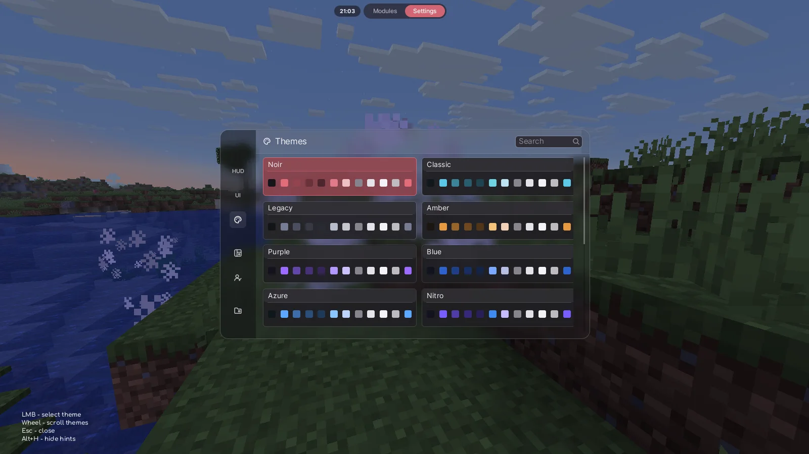
Adjustable blur and panel opacity, an animated menu background or your own picture are in the Interface page.
Straight from the client, no edits.
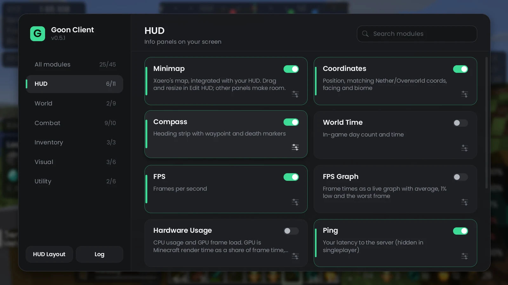
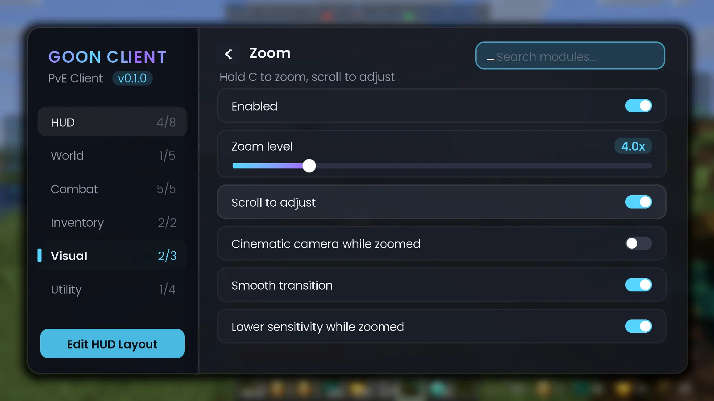
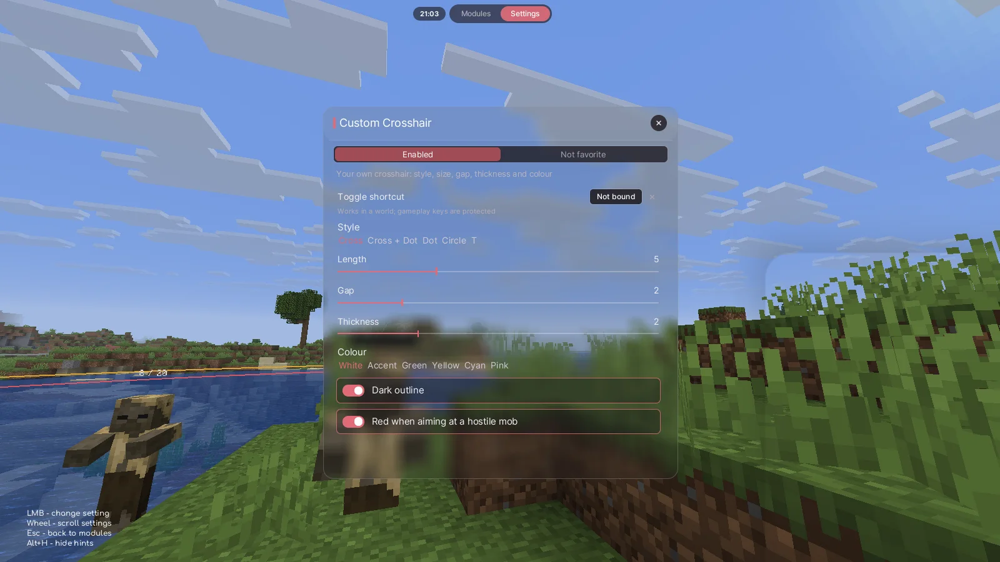
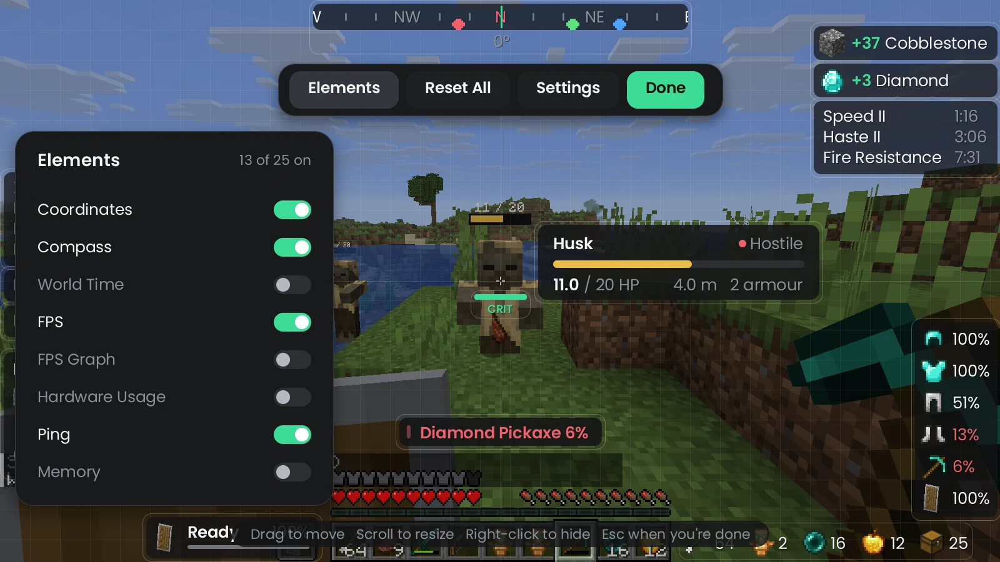
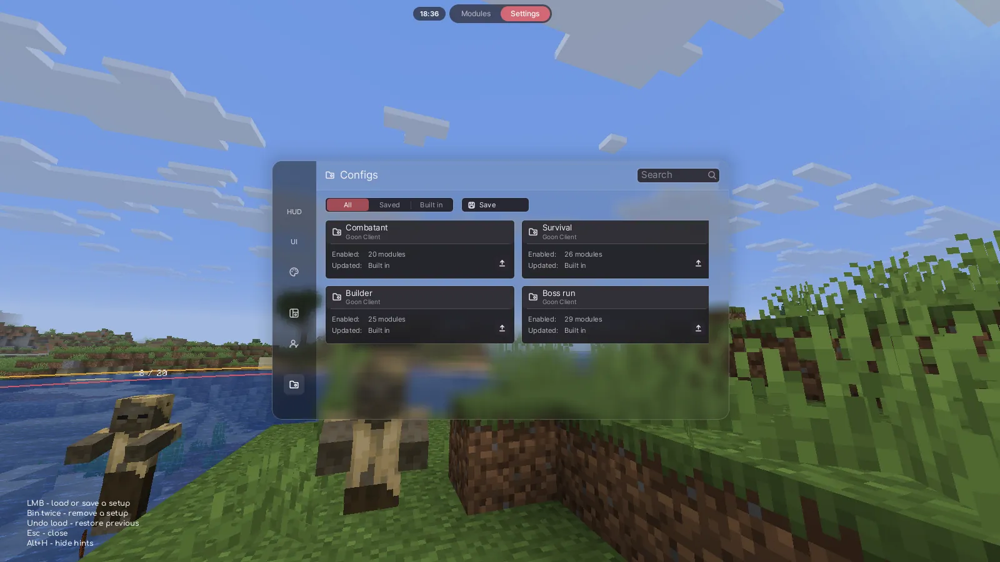
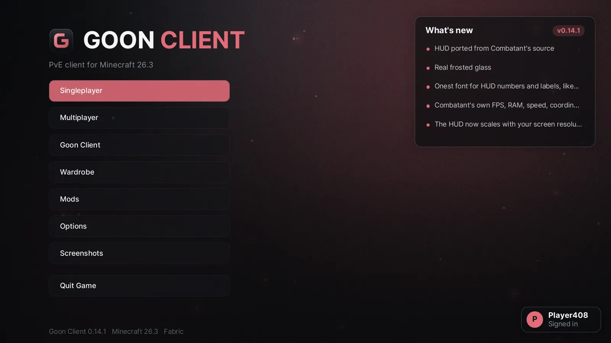
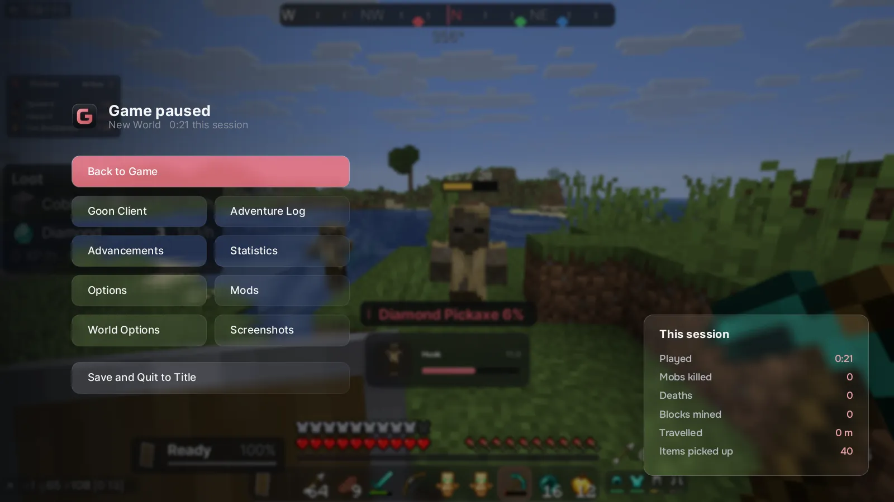
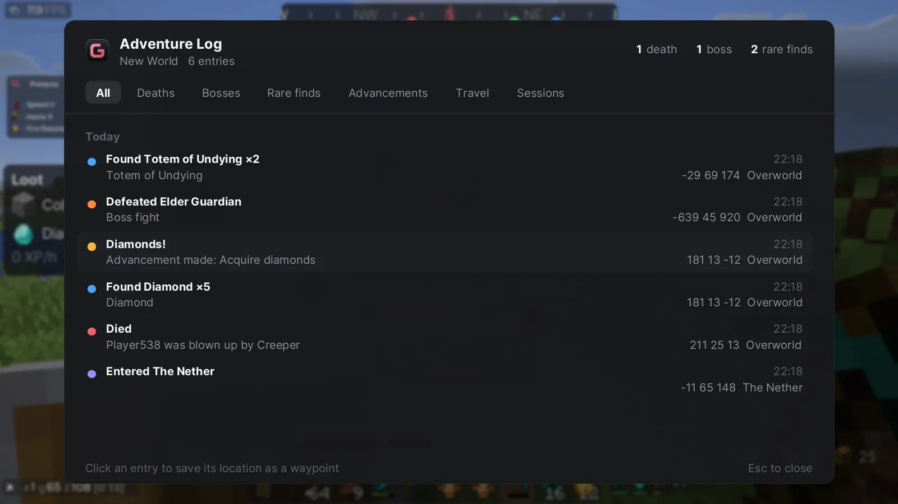
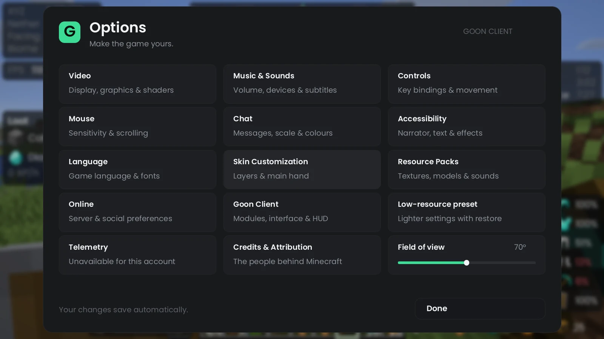
In game. FPS and memory pills, Potions, Keybinds, Cooldowns and Inventory panels, a target card and the glass hotbar.
Ten original capes in the Goon look, made for this client. Equip one from the main menu and see it in third person, with optional sharing when your cosmetics service is configured.
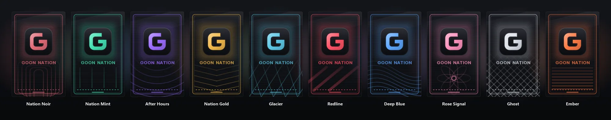
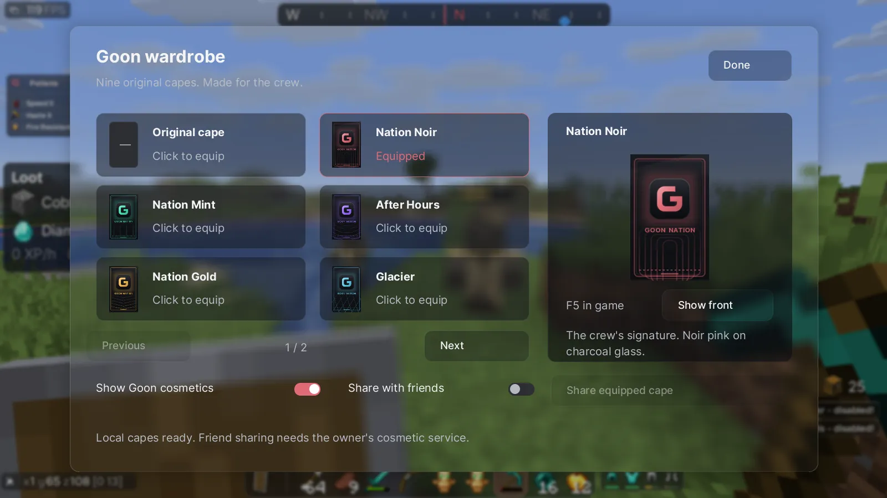
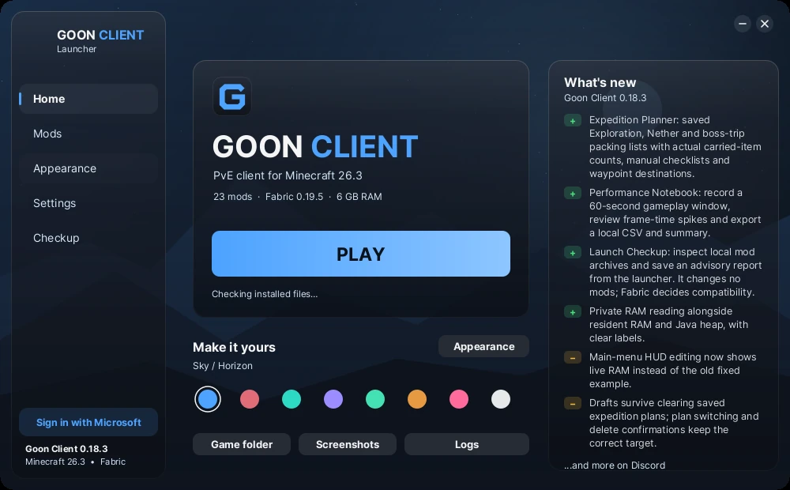
Eight launcher themes, three backgrounds and optional motion. Sky opens by default; choose your own look in Appearance.
The Goon Client Launcher gets Minecraft 26.3, Fabric and the whole mod pack ready for you, then starts the game.
.goonclient, so your normal worlds and settings are never touched.Goon Client ships with a hand-picked Fabric pack. Every mod keeps its author's credit and licence, with links to their pages.
Shader support is included; shader packs are off by default. Want culling for hidden mobs? Install EntityCulling from Modrinth yourself; its terms don't allow us to bundle it.
The same notes we post in Discord. Green is new, yellow is changed.
Goon Client v0.18.3 — survival companions
Open Expedition Planner under Inventory. Open Performance Notebook from FPS Graph. Reports and plans stay local. Includes the launcher and container housekeeping improvements from 0.18.2.
Microsoft handles your password. Plans and reports stay local; optional cape sharing and Discord Presence are described below.
You sign in on Microsoft's own website with a short code. Goon Client never sees or stores your password.
Sign-in tokens are saved only on your computer and only ever sent to Microsoft, Xbox Live and Minecraft.
No analytics, no ads, no telemetry, in the client, the launcher or this site. Read the details.
Download the launcher, unzip it anywhere and run Goon Client Launcher. Press Play: it installs everything and starts the game. If you'd rather use the Modrinth App or Prism Launcher, download the .mrpack and import it there instead.
Open the menu with Right Shift, go to Settings, then Configs, and load Combatant. It switches on the pills and panels shown here and keeps your theme. Undo brings back what you had.
Yes. Goon Client runs on Minecraft: Java Edition and you sign in with your own Microsoft account, the same one you use for the normal Minecraft Launcher.
Goon Client is made for survival quality of life, not for getting an edge in PvP. Still, every server has its own rules, and some don't allow things like minimaps or fullbright. Check your server's rules and turn off anything they don't allow.
No. Goon Client keeps its own game folder, so your vanilla worlds, settings and resource packs stay exactly as they are.
The launcher is Windows only for now. On Mac and Linux, import the .mrpack into the Modrinth App or Prism Launcher and you get the same client and mods.
The launcher isn't code-signed yet, so Windows SmartScreen may warn you the first time. Click More info, then Run anyway. Only download it from this site.

Grab the launcher and you'll be in game in a couple of minutes.